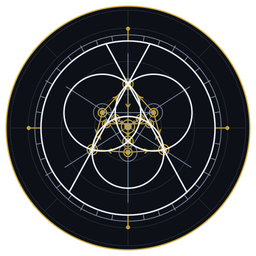
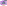
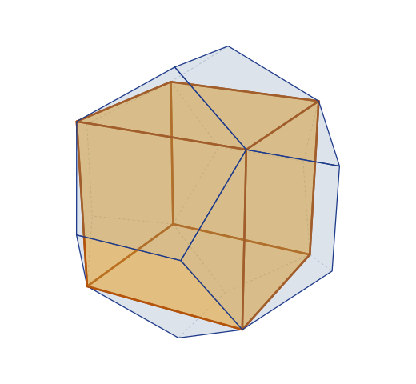
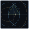

I. The Symbolic Core, Discovery & Software Catalog¶
Exact Algebraic Modeling, Interactive Visualization, Golden Discovery & Prover Catalog
The symbolic core provides the mathematical substrate on which every GEOMETOR construction, verification script, and studio broadcast runs—paired with structured catalogs of golden constructions and open-source geometric proving engines.
model — The Symbolic Construction Engine¶
Documentation: geometor.github.io/model
Repository: github.com/geometor/model · PyPI: geometor-model

geometor.model implements compass-and-straightedge geometry in pure symbolic algebra (SymPy):
Exact Primitives & Closed-Form 2D Intersections: Points, infinite lines
[ A B ], circles( A B ), segments/ A B /, polygons< A B C >, wedges, and polynomial loci—with fast closed-form algebraic intersection deduplication and scoped subconstructions.Rational & Projective Invariants (`invariants.py`): Exact symbolic
quadrance,line_spread,vertex_spread,cross,cross_ratio, andis_harmonicverification without transcendental rounding error.Constructive Proof & Ancestral DAGs (`proof.py`, `ancestors.py`): Every derived point records the exact ancestral chain of givens, lines, and circles required to construct it, paired with
@propositiondeductive step ledgers and JSON serialization.
explorer — Interactive SVG Workbench¶
Documentation: geometor.github.io/explorer
Repository: github.com/geometor/explorer
geometor.explorer unifies visual inspection, interactive construction, and print/video SVG export:
Web Canvas & Symbolic CLI: Construct and inspect
geometor.modelfigures interactively in the browser with pan/zoom SVG viewports, KaTeX algebraic coordinate inspection, and ancestral highlighting.Step-by-Step Timeline & Sheet Export: Scrub through construction history step by step or export publication-grade vector figures for Sphinx Book Codices and QHD broadcasts.
divine — Golden Ratio Discovery & Cut-the-Knot Construction Catalog¶
Documentation & Catalog: geometor.github.io/divine (Constructions Catalog)
Repository: github.com/geometor/divine · PyPI: geometor-divine

Once a model is constructed, geometor.divine scans every collinear point set on every line in the field to uncover emergent proportional structures—and now pairs the discovery engine with a structured Mathematical Catalog inspired by Alexander Bogomolny’s Cut-the-Knot golden ratio archive:
Exact Golden Sections & Chains: Identifies collinear triples \((A, B, C)\) whose segment ratios simplify algebraically to \(\phi = \frac{1 + \sqrt{5}}{2}\) or \(\phi^{-1}\), grouping contiguous golden sections into self-similar chains and harmonic quadruples \((A, B; C, D) = -1\).
Catalog of Classical & Modern Golden Constructions: One-item-per-page
geometor.modelconstructions and proofs spanning Euclid II.11/VI.30, Ptolemy’s pentagon-decagon, George Odom’s equilateral midline, Kurt Hofstetter’s 5-step compass constructions, and Tran Quang Hung / Michel Bataille circle configurations.
codes — Catalog of Geometric Computing & Theorem-Proving Engines¶
Live Catalog: geometor.github.io/codes
Repository: github.com/geometor/codes

A structured architectural Catalog surveying the landscape of open-source deductive provers, algebraic geometry kernels, and dynamic geometry systems alongside geometor.model:
Formal & Synthetic Provers: GeoCoq (Tarski & Hilbert axiomatics in Coq/Rocq), Java Geometry Expert (JGEX) (Chou–Gao–Zhang Area & Full-Angle Methods producing human-readable proofs), and Wu’s Characteristic Set / Gröbner Basis elimination (GeoGebra Discovery).
Exact & Computational Kernels: SymPy Geometry, CGAL (exact geometric predicates), Cinderella (projective Riemann-sphere continuity), and Rational Trigonometry algebra.
polyhedra — Symbolic 3D Polyhedra & Leonardo’s 1509 Plates Catalog¶
Live Catalog: geometor.github.io/polyhedra (Solids · Leonardo Plates)
Repository: github.com/geometor/polyhedra

Exact symbolic 3D coordinate models over quadratic and golden fields (\(\mathbb{Q}(\sqrt{2}, \sqrt{3}, \phi)\)) spanning the Platonic, Archimedean, Catalan, and Kepler–Poinsot polyhedra, paired with interactive reconstructions of Leonardo da Vinci’s 60 solido and vacuo plates from Luca Pacioli’s 1509 De Divina Proportione.
elementarium — Passive Optical Archive & Zero-Context Bootstrap¶
Documentation: geometor.github.io/elementarium
Repository: github.com/geometor/elementarium

Investigates 100,000-year knowledge preservation on fused-silica optical plates: bootstrapping number, rational spread, the Vesica Piscis, and Euclidean deduction from zero linguistic context using purely geometric optical invariants.
press — Digital Scriptorium Press & Master Shelf¶
Documentation: geometor.github.io/press
Repository: github.com/geometor/press
Curates the master bibliographic census, typographic grid, cover geometry, and print-edition specifications across the GEOMETOR Digital Scriptorium.
animations & trees — Proportional Studies & Monotone Tree Layouts¶
Live Sites: geometor.github.io/animations · geometor.github.io/trees
Repositories: github.com/geometor/animations · github.com/geometor/trees
animations documents classical golden-section studies, root-\(3\) and root-\(5\) grids, and star polygon sequences; trees implements crossing-free monotone planar drawings of rooted dependency trees grounded in Stern–Brocot mediant trees and Farey rational sequences.